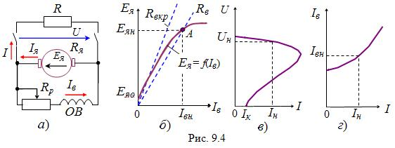

Рассмотрим процесс самовозбуждения ГПТ параллельного возбуждения (рис. 9.4, a). В режиме холостого хода (Eя = f(Iв)) ток во внешней цепи I = 0, а в обмотке возбуждения и в обмотке якоря протекает небольшой ток, обусловленный остаточной ЭДС якоря Еяо (рис. 9.4, б). Если ОВ подключена к цепи якоря таким образом, что создаваемый её МДС магнитный поток совпадает по направлению с остаточным магнитным потоком, то ЭДС якоря (соответственно магнитный поток Фв и ток Iв обмотки возбуждения) будет возрастать. Процесс самовозбуждения генератора заканчивается, когда падение напряжения в ОВ становится равным ЭДС якоря, т. е. Ея = RвIв (точка А ,рис. 9.4, б). Если увеличивать сопротивление цепи ОВ (посредством реостата Rр, см. рис. 9.4, a), то точка А пересечения прямой RвIв с характеристикой Eя = f(Iв) сместиться влево (рис. 9.4, б). При достижении значения сопротивления Rвкр цепи возбуждения, называемого критическим, напряжение U на зажимах генератора будет неустойчивым, практически не превышающим ЭДС Еяо. Поэтому сопротивление цепи возбуждения Rв генератора должно быть меньше критического значения Rвкр

Генераторы последовательного возбуждения не нашли широкого применения из-за непостоянства выходного напряжения, поэтому их характеристики не рассматриваются.